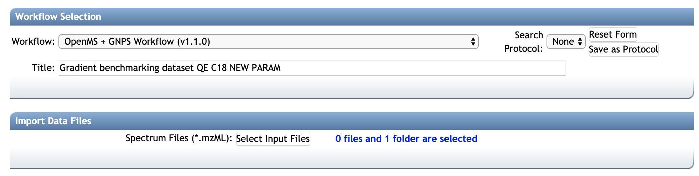
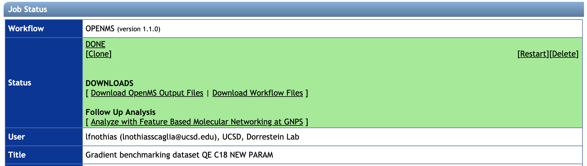

FBMN with OpenMS
Introduction to FBMN with OpenMS
The Feature-Based Molecular Networking (FBMN) is a computational method that bridges popular mass spectrometry data processing tools for LC-MS/MS and molecular networking analysis on GNPS. The tools supported are: MZmine2, OpenMS, MS-DIAL, MetaboScape, XCMS, and Progenesis QI.
The main documentation for Feature-Based Molecular Networking can be accessed here:
Below we are describing how to use OpenMS with the FBMN workflow on GNPS.
Citations
This work builds on the efforts of our many colleagues, please cite their work:
Röst, H. L. et al. OpenMS: a flexible open-source software platform for mass spectrometry data analysis. Nat. Methods 13, 741–748 (2016). https://doi.org/10.1038/nmeth.3959
Wang, M. et al. Sharing and community curation of mass spectrometry data with Global Natural Products Social Molecular Networking. Nat. Biotechnol. 34, 828–837 (2016). https://doi.org/10.1038/nbt.3597
Development
The OpenMS website at https://www.openms.de/
The GNPSExport TOPP tool code can be found on OpenMS GitHub repository and the lastest version on this fork repository.
The code for the Open-GNPS pipeline (ProteoSAFe workflow and python wrappers) is available on this GitHub repository.
Feature Detection with OpenMS for the FBMN
We have developed an OpenMS-GNPS pipeline that can be used for the processing of metabolomics LC- with OpenMS and the Feature Based Molecular Networking (FBMN). This pipeline used OpenMS tools and the GNPSExport (part of OpenMS TOPP tools).
In brief, after running an OpenMS "metabolomics" pipeline, the GNPSExport TOPP tool can be used on the consensusXML file and corresponding mzML files to generate the files needed for FBMN on GNPS. These two files are:
- The MS2 spectral data file (.MGF format) which is generated with the GNPSExport tool.
- The feature quantification table (.TXT format) which is generated with the TextExport tool.
Running the OpenMS-GNPS pipeline on GNPS web-platform
The OpenMS-GNPS pipeline is an experimetal workflow deployed currently on proteomics2.ucsd.edu [https://proteomics2.ucsd.edu/ProteoSAFe/]). The job can be configured as follow:

- Connect to https://proteomics2.ucsd.edu/ProteoSAFe/ (You will have to be logged in proteomics2.ucsd.edu first).
- Select the workflow:
OpenMS + GNPS workflow - In Import Data Files, select the input mzML files (prefered) or mzXML files (not recommended, because the pipeline would have to perform conversion to mzML)
- Select the parameters from the presets
HPLC-Q-Exactive, UHPLC-Q-Exactive, HPLC-QTOF, UHPLC-Q-Exactive. The corresponding OpenMS configuration files (.INI files) are available from that [GitHub repository] (https://github.com/Bioinformatic-squad-DorresteinLab/openms-gnps-workflow/presets/)). Alternatively, you can upload your OpenMS TOPP tool parameter file (.INI files). Note that parameter files can be updated with a text editor or with INIFileEditor TOPP tool. - Wait for the job to complete. You will get a notification.
- Download the main output files with "Download OpenMS Output Files" and/or all the files with "Download Workflow Files".
- Unzip the archive.
- Examine the consensusXML file (in the filefilter folder) with TOPPAS.
- The
gnpsexportfolder contains the MS/MS spectral summary file (.MGF file) - The
textexporterfolder contains the feature quantification table (.TXT file). - Click a FBMN workflow on GNPS by clicking on "Run a Feature-Based Molecular Networking at GNPS" Note that you have to be logged in GNPS first, https://gnps.ucsd.edu). See documentation for the FBMN workflow on GNPS.
- Alternatively, upload these files via FTP for FBMN on GNPS, or use them for other annotation tools (DEREPLICATOR, Mass2Motif, NAP.

Running the OpenMS-GNPS pipeline with OpenMS TOPP tools
Installation and requirement
Installing OpenMS TOPP tools: See the OpenMS website at https://www.openms.de/
Representative OpenMS-GNPS workflow
A representative OpenMS-GNPS workflow would sequencially use these OpenMS TOPP tools:
- Input the mzML files.
- Run the FeatureFinderMetabo tool on the mzML files.
- Run the IDMapper tool on the featureXML and mzML files.
- Run the MapAlignerPoseClustering tool on the featureXML files.
- Run the MetaboliteAdductDecharger tool on the featureXML files.
- Run the FeatureLinkerUnlabeledKD tool or FeatureLinkerUnlabeledQT, on the featureXML files and output a consensusXML file.
- Run the FileFilter tool on the consensusXML file to keep only consensusElements with at least MS/MS scan (peptide annotation).
- Run the GNPSExport tool on the "filtered consensusXML file" to export an .MGF file.
- Run the TextExport tool on the "filtered consensusXML file" to export an .TXT file.
- Upload your files to GNPS and run the Feature-Based Molecular Networking workflow. See the main documentation for using the [FBMN] on GNPS.
Requirements for the OpenMS-GNPS pipeline
- The IDMapper has to be ran on the featureXML files, in order to associate MS2 scan(s) (peptide annotation) with each features. These peptide annotations are used by the GNPSExport.
- The FileFilter has to be ran on the consensusXML file, prior to the GNPSExport, in order to remove consensusElements without MS2 scans (peptide annotation).
The GNPSExport TOPP tool
The GNPSExport TOPP tool can be ran on a consensusXML file and the corresponding mzML files to generate a MS/MS spectral file (MGF format) and corresponding feature quantification table (.TXT format) that contains the LC-MS peak area intensity.
For each consensusElement in the consensusXML file, the GNPSExport produces one representative consensus MS/MS spectrum (named peptide annotation in OpenMS jargon) outputed in the MS/MS spectral summary file (.MGF file). Several mode for the generation of the consensus MS/MS spectrum are available and described below. Note that these parameters are defined in the GNPSExport parameters file (.INI file, available with that link).
Usage and Options for GNPSExport TOPP tool:
GNPSExport --help
GNPSExport -ini iniFile-GNPSExport.ini
-in_cm filefilter.consensusXML
-in_mzml inputFile0.mzML inputFile1.mzML
-out GNPSExport_output.mgf
Options for the consensus MS/MS spectra: output_type
-
Merge [RECOMMENDED]:
merged_spectra- For each consensusElement, the GNPSExport will merge all the eligible MS/MS scans into one representative consensus MS/MS spectrum. Eligible MS/MS scans have a pairwise cosine similarity with the MS/MS scan of highest precursor intensity above the Cosine Similarity Treshold. The fragment ions of merged MS/MS scans are binned in m/z (or Da) range defined by the Binning width parameter.- Cosine Similarity Treshold:
merged_spectra:cos_similarity(float, default: 0.9) - Parameter that defines Cosine Similarity Treshold for the pairwise cosine similarity between the MS/MS scan with the highest precursor intensity and the other MS/MS scans. - Binning width:
merged_spectra:ms2_binned_size(float, default: 0.02 Daltons) - Parameter that defines the Binning width of fragment ions during the merging of eligible MS/MS spectra.
- Cosine Similarity Treshold:
-
Most intense:
most_intense- For each consensusElement, the GNPSExport will output the most intense MS/MS scan (with the highest precursor ion intensity) as consensus MS/MS spectrum. -
All MS/MS:
full_spectra- For each consensusElement, the GNPSExport will output All MS/MS scans.
Note that mass accuracy and the retention time window for the pairing between MS/MS scans and a LC-MS feature orconsensusElement is defined at the IDMapper tool step.
Running the FBMN workflow with OpenMS files
After the processing with OpenMS, the output files can be used to run the Feature-Based Molecular Networking workflow on GNPS either using the [Superquick FBMN start page] (http://dorresteinappshub.ucsd.edu:5050/featurebasednetworking) or the standard interface of the FBMN workflow (you need to be logged in GNPS first).
Make sure to select the correct table source (OpenMS).
The main documentation for FBMN can be accessed here.
Page contributors
Louis Felix Nothias (UCSD), Abinesh Sarvepalli (UCSD)
Contribute to the Documentation
- For informations/feature request, please open an "Issue" on the CCMS-UCSD/GNPSDocumentation GitHub repository.
- To contribute directly to the GNPS documentation, fork the CCMS-UCSD/GNPSDocumentation repository, and make a "Pull Request".